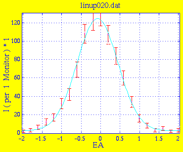
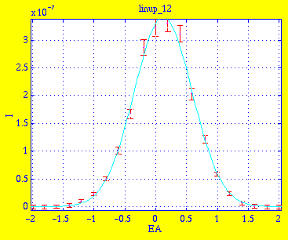
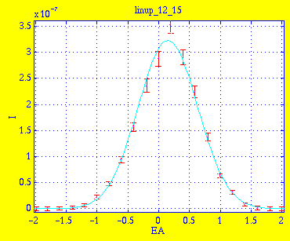
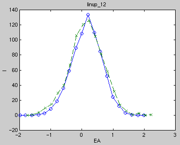

Amplitude 1.2209e+02 3.8219e+00 Centre -8.0173e-02 1.3810e-02 Width 5.2651e-01 1.2654e-02 Background 2.3951e+00 5.0603e-01 * Chi Squared 0.4844
This is the result linup_12.sim of simulation with 1e6 neutrons. Instrument definition linup-6.instr.

Amplitude 3.4078e-07 6.2156e-09 Centre 1.2033e-01 5.3262e-03 Width 4.6952e-01 5.2530e-03 Background 3.3972e-10 9.3024e-10 * Chi Squared 0.6162This is the result linup_12_15.sim of simulation with 4e5 neutrons where the sample has been moved 1.5mm to be centered in the beam (see the discussion in a previous measurement).

Amplitude 3.2307e-07 7.2637e-09 Centre 1.5058e-01 6.7407e-03 Width 4.8253e-01 6.9169e-03 Background -2.4984e-10 1.2374e-09 * Chi Squared 0.9227The data with the centered sample is slightly wider. This seems to indicate that the illumination of the sample by the beam is of importance and makes it difficult to conclude much without knowing more about the precise beam cross-section at the sample position during experiments.

The correspondance is not perfect. We assume that this is due to different illumination of sample in experiment and simulation as discussed.